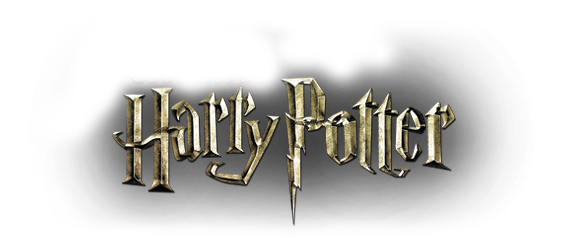
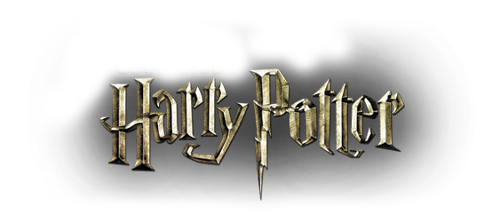

Romans :
- L'école des sorciers
- La chambre des secrets
- Le Prisonnier Azkaban
- La coupe de feu
- L'ordre du Phoenix
- Le prince de sang-mêlé
- Les reliques de la mort
Pièce de théatre :
- L'enfant maudit
 


L'intrigue du premier roman débute durant l'été 1991. Peu avant son onzième anniversaire, Harry reçoit une lettre l'invitant à se présenter lors de la rentrée des classes à l'école de sorcellerie de Poudlard. Malgré les tentatives de son oncle et de sa tante pour l'empêcher de s'y rendre, Rubeus Hagrid, un « demi-géant » envoyé par le directeur de Poudlard, Albus Dumbledore, va faire découvrir à Harry le monde des sorciers et l'amener à se rendre à la gare de King's Cross de Londres, où il prendra le Poudlard Express qui le conduira jusqu'à sa nouvelle école.
Une fois à Poudlard, Harry apprend à maîtriser et utiliser les pouvoirs magiques qu'il possède et se fait deux amis inséparables : Ronald Weasley et Hermione Granger. Le trio tente d'empêcher Voldemort de s'emparer de la pierre philosophale de Nicolas Flamel, conservée sous bonne garde à Poudlard.

L'année suivante, Harry et ses amis doivent faire face à une nouvelle menace à Poudlard. La fameuse Chambre des secrets, bâtie plusieurs siècles plus tôt par l'un des fondateurs de l'école, Salazar Serpentard, aurait été rouverte par son « héritier ». Cette Chambre, selon la légende, contiendrait un gigantesque monstre destiné à tuer les enfants moldus acceptés à l'école contre le souhait de Serpentard. Hermione, née de parents moldus, se retrouve elle aussi menacée.
Harry, sachant parler le fourchelang, est accusé en premier lieu d'être l'héritier de Serpentard par la plupart des élèves, tandis que Ginny Weasley, la sœur de Ron, est curieusement manipulée par un journal intime ayant appartenu à un certain Tom Jedusor. Harry apprend par la suite que Jedusor et Voldemort sont une seule et même personne, et que Jedusor est le véritable héritier de Serpentard, agissant sur l'école par le biais de ses souvenirs conservés dans son journal.

À l'été 1993, les sorciers, ainsi que les Moldus, sont informés de l'évasion de prison d'un dangereux criminel nommé Sirius Black. Un peu plus tard, Harry apprend que la motivation de Black est de le tuer afin de permettre à Voldemort, son maître, de retrouver l'étendue de son pouvoir. Un important dispositif de sécurité est donc mis en place à Poudlard pour assurer la protection de Harry durant l'année. En parallèle, celui-ci fait la connaissance de son nouveau professeur de défense contre les forces du mal, le professeur Lupin, un ancien ami de ses parents et dont il devient très proche. Harry utilise régulièrement la cape d'invisibilité de son père ainsi que la carte du Maraudeur pour explorer les recoins méconnus du château et se rendre au village voisin de Pré-au-Lard, malgré son interdiction de quitter l'école.
En fin d'année, Sirius Black parvient à attirer Harry, Ron et Hermione à l'extérieur de l'école et, en présence de Lupin qui vient les retrouver, leur explique les réelles motivations de son évasion : retrouver et tuer Peter Pettigrow, un sorcier qui se cache depuis douze ans sous l'apparence du rat de compagnie de Ron. Selon Black, Pettigrow serait le responsable de la trahison de James et Lily Potter. Avant de mourir, ceux-ci avaient fait de Sirius Black leur témoin de mariage et le parrain de leur fils, Harry.

Dans l'intrigue du quatrième roman, une édition du célèbre tournoi des Trois Sorciers se déroule exceptionnellement à Poudlard et deux autres délégations européennes se rendent sur place pour participer à la compétition. Harry se voit contraint de participer au tournoi, qui se déroule sur trois épreuves réparties sur l’année. La première consiste à récupérer un œuf d'or protégé par un dragon, la seconde à récupérer une personne aimée au fond du lac de Poudlard et la dernière, à progresser dans un labyrinthe à obstacles pour atteindre le trophée de la victoire dissimulé à l'intérieur.
Alors que Harry et Cedric saisissent le trophée en même temps, ils sont téléportés auprès de Peter Pettigrow. Après avoir tué Cedric Diggory, Pettigrow utilise le sang de Harry pour faire renaître Voldemort et ôter au garçon sa protection naturelle l'ayant immunisé jusqu'alors contre les pouvoirs du mage noir. Harry affronte Voldemort qui a repris forme humaine, mais parvient à lui échapper en attrapant une nouvelle fois le trophée qui le ramène à Poudlard.

Harry, Ron et Hermione retournent à Poudlard, où un nouveau professeur de défense contre les forces du mal, Dolores Ombrage, engagée par le ministre de la Magie lui-même, ne tarde pas à instaurer des règles très strictes sur l'école, interdisant aux élèves de pratiquer la magie, de se rassembler en groupe ou de lire certains articles de presse défendant le point de vue de Harry Potter sur le retour de Voldemort. À la fin de l'année, piégé par Voldemort, Harry se rend au ministère de la Magie où il pense que son parrain est détenu et torturé.
Il est accompagné de Ron, Hermione, Ginny Weasley, Luna Lovegood et Neville Londubat. Severus Rogue prévient les autres membres de l’Ordre, qui se précipitent au secours de Harry et de ses amis aux prises avec les mangemorts. Sirius Black meurt durant la bataille, tué par sa propre cousine et bras droit de Voldemort. De retour à Poudlard, Harry apprend qu'il est la seule personne à avoir une chance de vaincre définitivement Voldemort. Après les événements du ministère dont il a été témoin, le ministre Cornelius Fudge admet enfin le retour de Voldemort et la deuxième guerre débute officiellement.
L'intrigue de ce sixième roman se concentre davantage sur l'histoire de Voldemort. En parallèle, durant ses cours de potions, Harry récupère un vieux manuel ayant appartenu à un certain « Prince de sang-mêlé ». Le livre regorge d'une multitude de conseils et de notes ajoutés à la main par son ancien propriétaire, et grâce auxquels Harry obtient d'extraordinaires résultats. Se sachant condamné depuis sa manipulation de l'un des horcruxes, Dumbledore demande au professeur d'intervenir à la place de Drago en temps voulu, permettant dans un même temps à Rogue de demeurer crédible aux yeux de Voldemort. Rogue engage sa parole auprès de Dumbledore, qui ne lui laisse pas le choix.
Dumbledore fait signe à Rogue, qui tue le directeur sous les yeux de Harry alors que ce dernier ignore tout de leur arrangement. Rogue l'empêche de combattre, puis disparaît, laissant Harry, les autres élèves et tout le personnel de Poudlard pleurer la perte du plus grand sorcier de sa génération et principal obstacle de Voldemort.

Harry doit mourir, car il constitue lui-même un horcruxe involontaire depuis le jour où Voldemort a tenté de le tuer alors qu'il n'était qu'un bébé. Résigné, Harry se rend à Voldemort dans la forêt interdite. En ayant utilisé le sang de Harry pour recréer son corps après le tournoi des Trois Sorciers, Voldemort aurait transféré en lui-même une partie du charme de protection que Lily Potter avait transmis à son fils. Par conséquent, tant que ce charme est présent dans le corps de Voldemort, Harry ne peut mourir. Neville Londubat tire l'épée de Gryffondor du Choixpeau magique et s'en sert pour décapiter le serpent.
Tous les horcruxes à présent détruits, Voldemort redevient par conséquent un simple mortel. La rencontre des deux sortilèges de Harry et de Voldemort fait voler la baguette de sureau des mains du mage noir, la baguette refusant de tuer Harry, son maître légitime et le seul à avoir accepté la mort. Voldemort est tué par son propre maléfice.